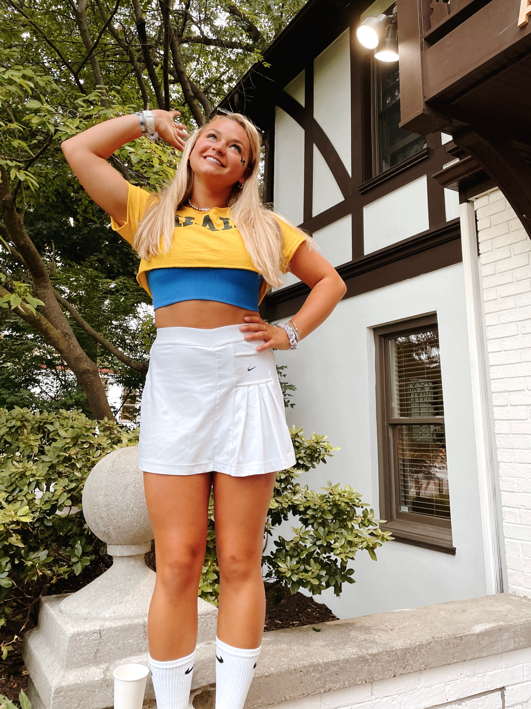
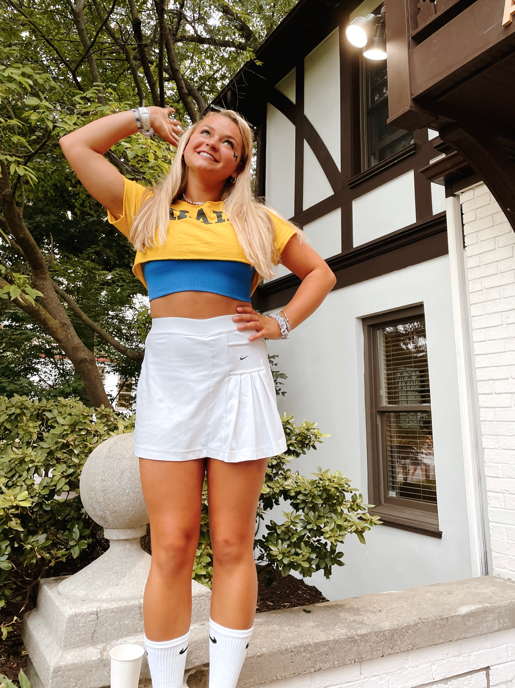
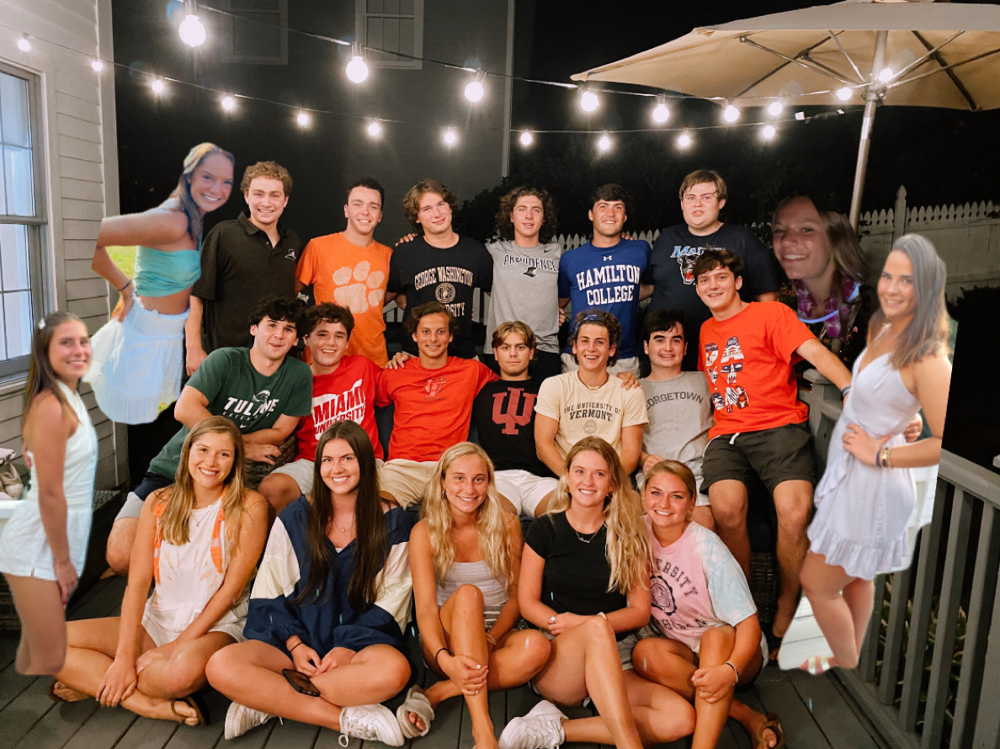
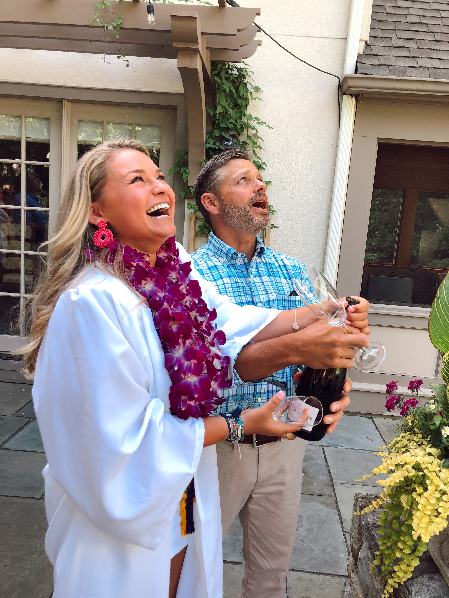
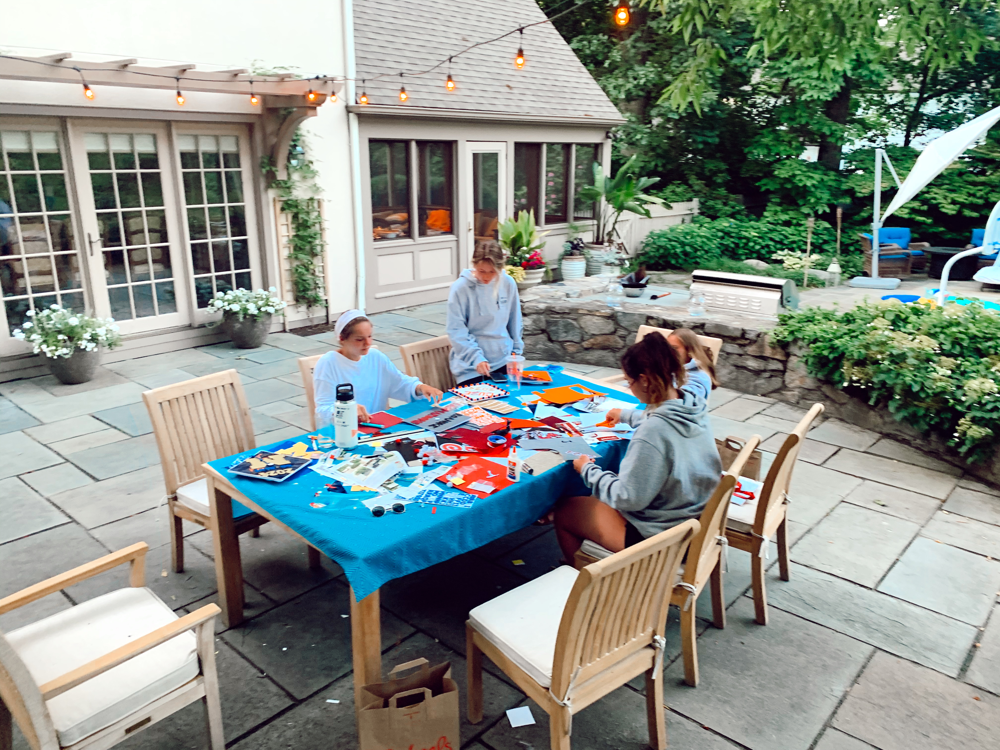
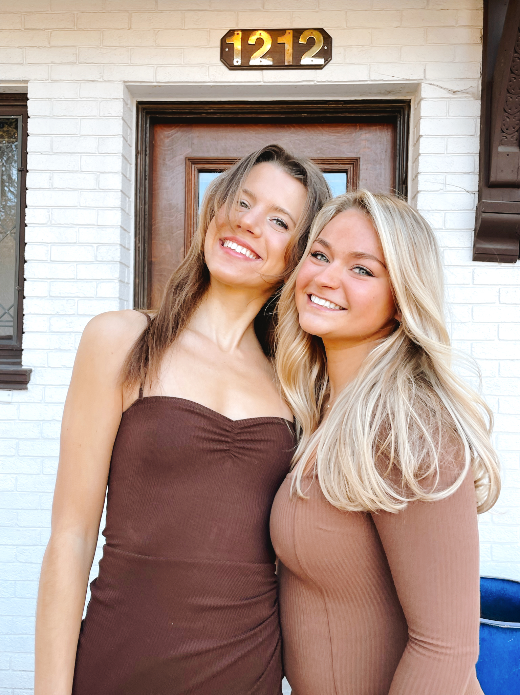
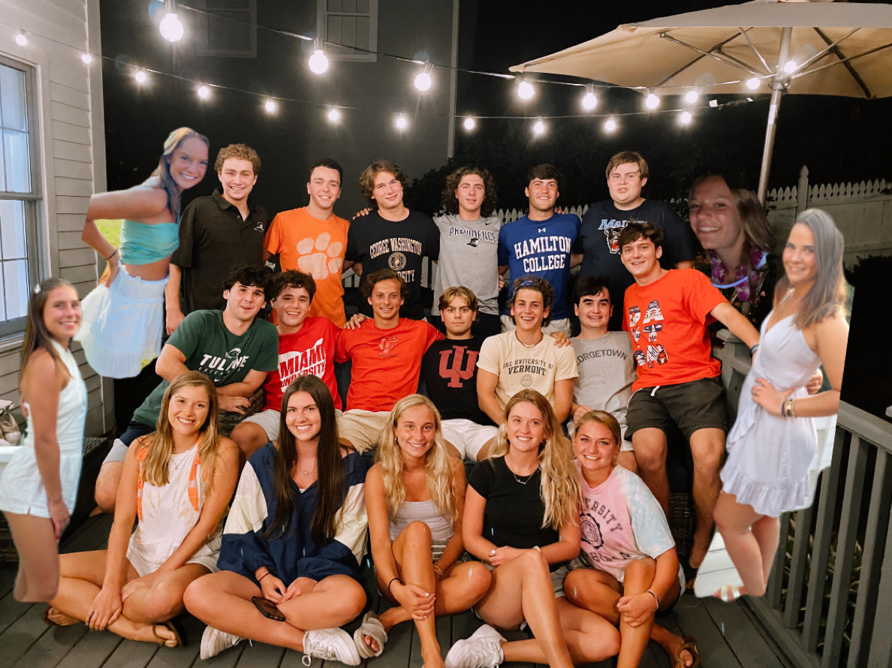
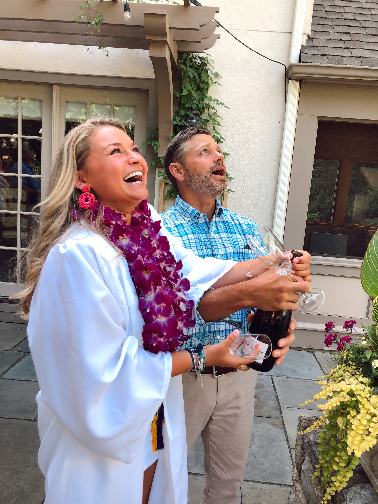
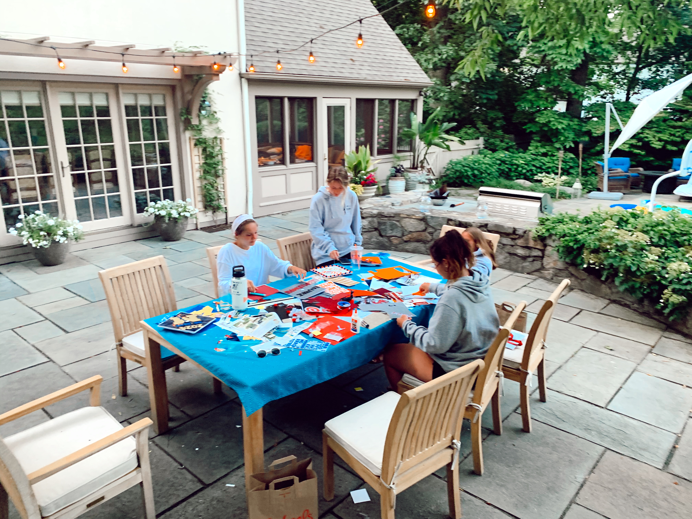
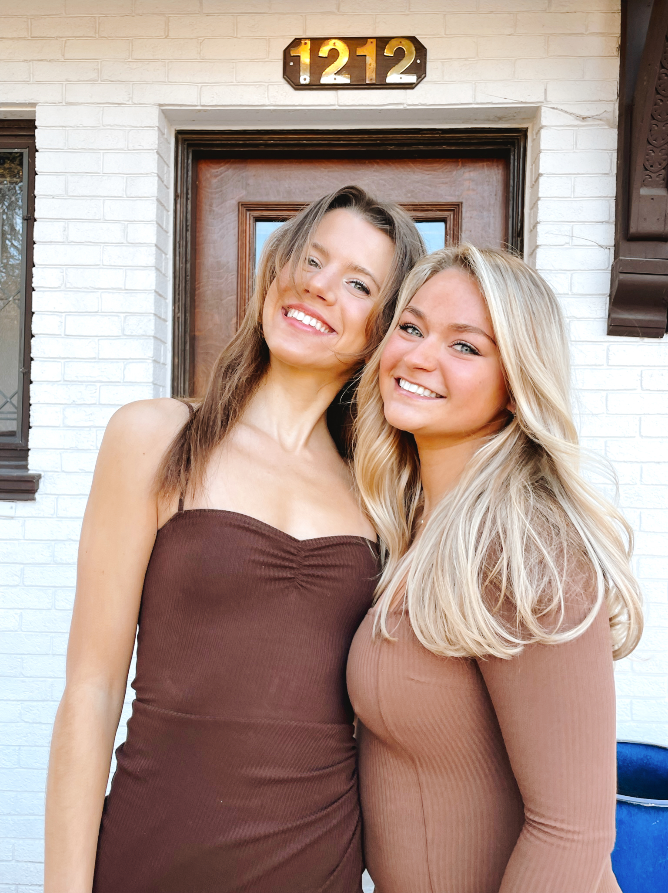

Hi, I'm Katie Valus
Hi! My name is Katie Valus. Welcome to my food blog! I am excited to share with you my favorite recepies and more about my lifestyle! I love delicious foods that are high in protein and make my body feel good, full, and fueld. Many of my recepies are gluten and dairy free. I hope you enjoy them as much as I do!
I have 2 brothers and amazing parents. It was hard to leave my family and come to college after I graduated highschool in 2020. Luckily, I have amazing friends who made the transition easy. I love spending time with my friends. I have so many fond memories with my friends that I cant wait to share on this blog.

 



 `
` 
 






